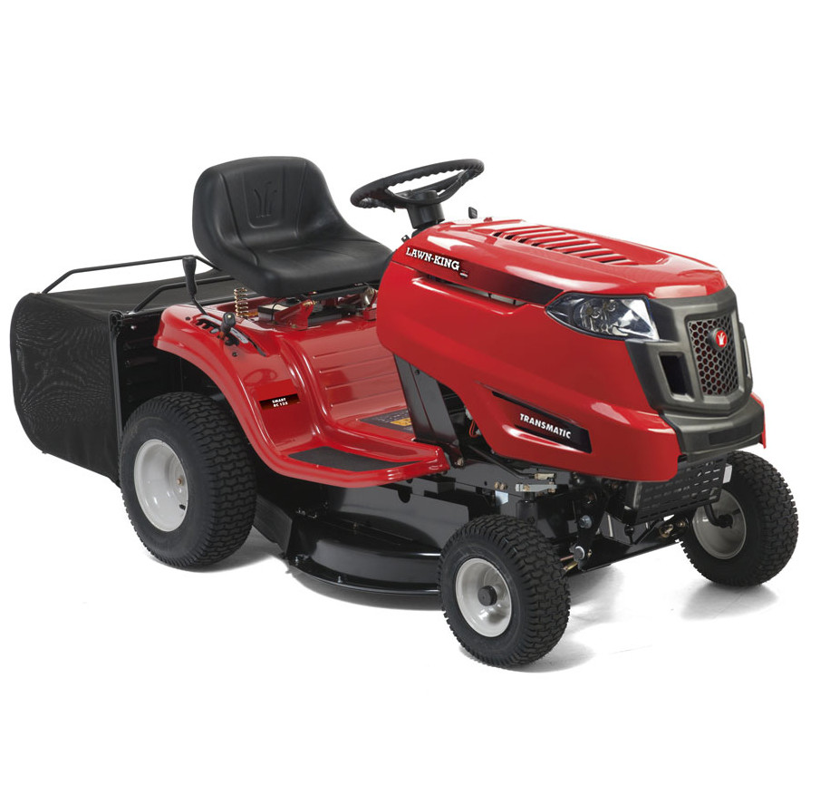
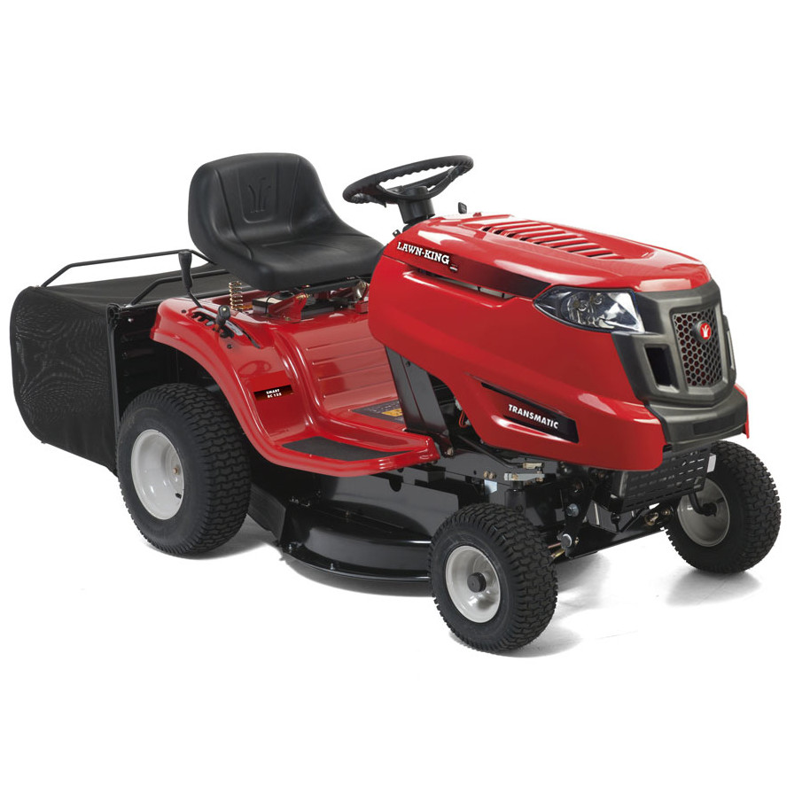
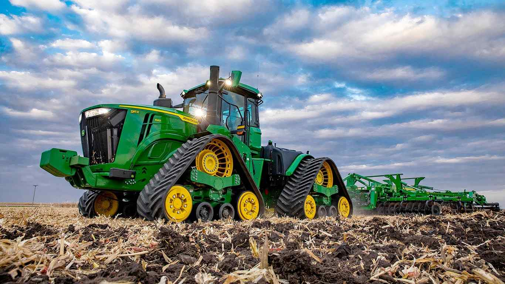
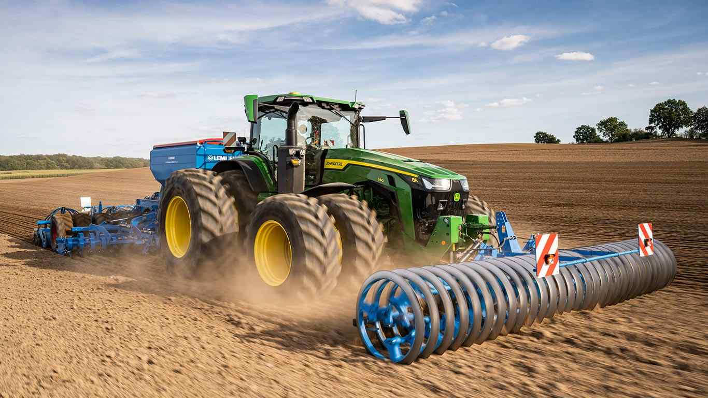
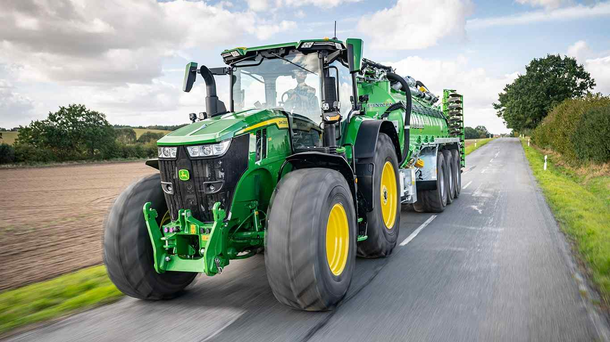
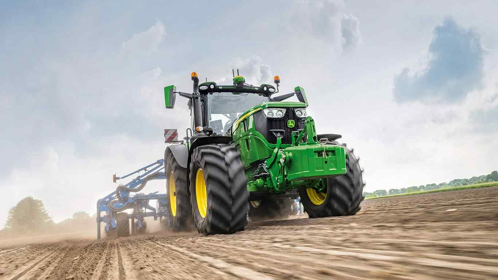
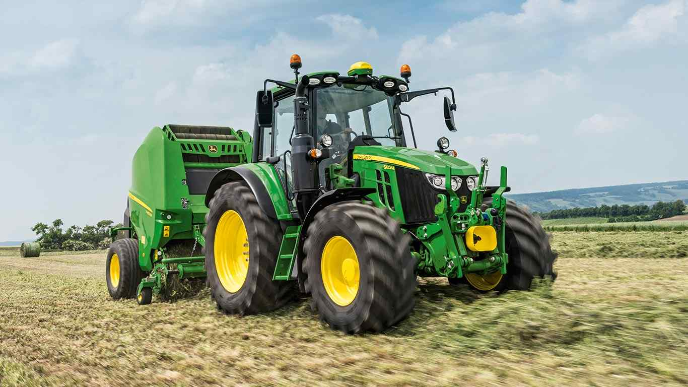
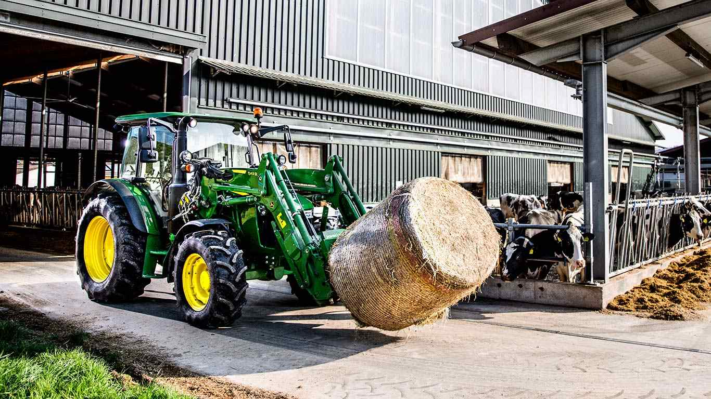
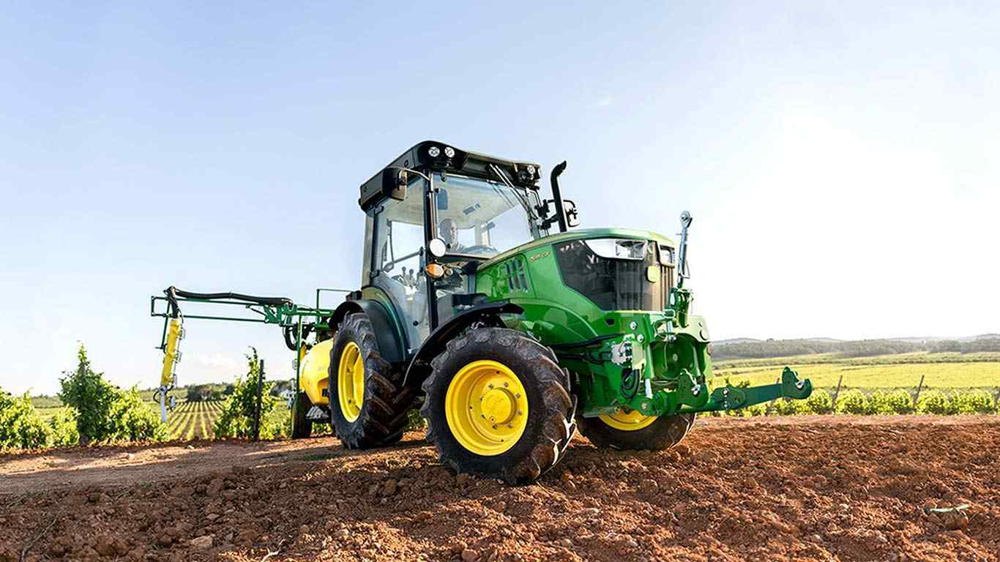
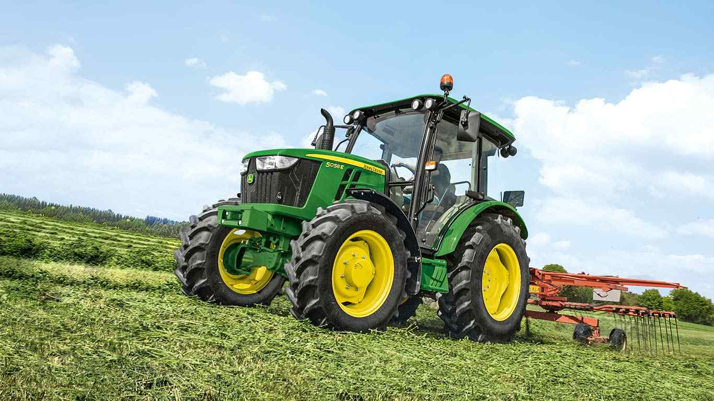

My Tractor Fleet as of 2022:
I only buy from john deere as nothing runs quite like a deere.
|  |  |  |  |  |  |  |  |
Tractors in the news...
Clarkson's Farm

Last year, amazon prime video released the wildly successful farming TV documentary
clarkson's farm. The documentary is set in diddly squat farm.
Diddly squat farm is situated in Oxfordshire and grows a rotation of barley, rapseed and wheat.
The show casts Jeremy Clarkson, Kaleb Cooper, Gerald Cooper, Charlie Ireland, Lisa Hogan,
Kevin Harrison and Ellen Helliwell.
Tractor Enthusiast MP

Conservative MP Neil Parish, has had the whip suspended due to allegations
that he had watched inappropriate videos on his phone in the house of commons.
He appeared in a GB news interview before he was known as the offender
stating that the MP in question should be "dealt with and dealt with seriously".
When it came out that he was that MP in question, he said that he viewed the
videos by mistake. Supporters of Parish have suggested
that he might have been looking at "Class Dominator Tractors", a type of
combine harvester. Supposedly, he had been looking at the tractors and mistakenly went onto
the wrong website. Supporting his defence, Parish has been pictured standing next to tractors
many times in the past. Unfortunately, trolls on twitter have been creating memes about this
incident, mocking the seriousness of the situation.
On the 30th of April 2022, Parish resigned as MP.